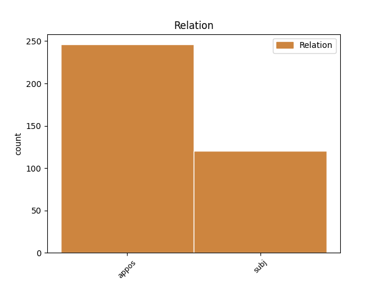
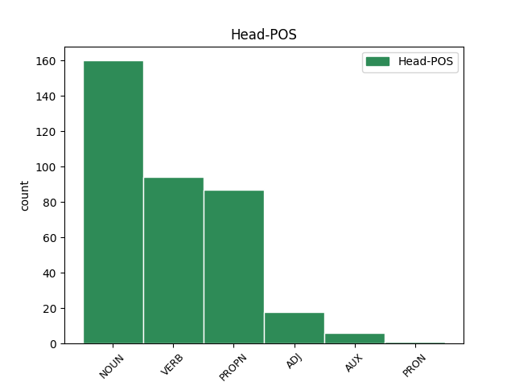
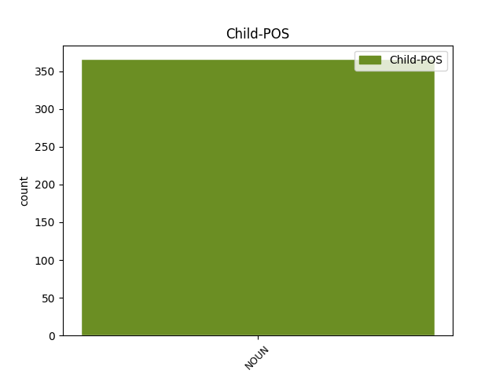

Distribution of features within this leaf



Agreement Rules sorted by frequency.
- When the dependent token is the appositional modifier(appos) of the head token, and the dependent token is NOUN.
1 Blek Blek PROPN Npmsn Case=Nom|Gender=Masc|Number=Sing 0 _ _ _
2 Het _ _ _ _ 0 _ _ _
3 , _ _ _ _ 0 _ _ _
4 odnosno _ _ _ _ 0 _ _ _
5 Crni _ _ _ _ 0 _ _ _
6 šešir šešir NOUN Ncmsn Case=Nom|Gender=Masc|Number=Sing 1 appos _ _
7 je _ _ _ _ 0 _ _ _
8 termin _ _ _ _ 0 _ _ _
9 za _ _ _ _ 0 _ _ _
10 hakera _ _ _ _ 0 _ _ _
11 koji _ _ _ _ 0 _ _ _
12 koristi _ _ _ _ 0 _ _ _
13 svoje _ _ _ _ 0 _ _ _
14 umeće _ _ _ _ 0 _ _ _
15 u _ _ _ _ 0 _ _ _
16 ilegalne _ _ _ _ 0 _ _ _
17 svrhe _ _ _ _ 0 _ _ _
18 . _ _ _ _ 0 _ _ _
1 Najprizemniji _ _ _ _ 0 _ _ _
2 primer _ _ _ _ 0 _ _ _
3 ove _ _ _ _ 0 _ _ _
4 opasnosti _ _ _ _ 0 _ _ _
5 je _ _ _ _ 0 _ _ _
6 skandal _ _ _ _ 0 _ _ _
7 iz _ _ _ _ 0 _ _ _
8 2014. _ _ _ _ 0 _ _ _
9 kada _ _ _ _ 0 _ _ _
10 su _ _ _ _ 0 _ _ _
11 ukradeni _ _ _ _ 0 _ _ _
12 i _ _ _ _ 0 _ _ _
13 objavljeni objaviti ADJ Appmpny Case=Nom|Definite=Def|Degree=Pos|Gender=Masc|Number=Plur|VerbForm=Part|Voice=Pass 0 _ _ _
14 privatni _ _ _ _ 0 _ _ _
15 obnaženi _ _ _ _ 0 _ _ _
16 selfiji selfi NOUN Ncmpn Case=Nom|Gender=Masc|Number=Plur 13 subj _ _
17 poznatih _ _ _ _ 0 _ _ _
18 osoba _ _ _ _ 0 _ _ _
19 iz _ _ _ _ 0 _ _ _
20 sveta _ _ _ _ 0 _ _ _
21 filma _ _ _ _ 0 _ _ _
22 i _ _ _ _ 0 _ _ _
23 pop _ _ _ _ 0 _ _ _
24 kulture _ _ _ _ 0 _ _ _
25 , _ _ _ _ 0 _ _ _
26 koji _ _ _ _ 0 _ _ _
27 su _ _ _ _ 0 _ _ _
28 bili _ _ _ _ 0 _ _ _
29 pohranjeni _ _ _ _ 0 _ _ _
30 na _ _ _ _ 0 _ _ _
31 oblaku _ _ _ _ 0 _ _ _
32 podataka _ _ _ _ 0 _ _ _
33 u _ _ _ _ 0 _ _ _
34 koji _ _ _ _ 0 _ _ _
35 su _ _ _ _ 0 _ _ _
36 hakeri _ _ _ _ 0 _ _ _
37 upali _ _ _ _ 0 _ _ _
Disagree Examples:
1 Nadam _ _ _ _ 0 _ _ _
2 se _ _ _ _ 0 _ _ _
3 da _ _ _ _ 0 _ _ _
4 su _ _ _ _ 0 _ _ _
5 strane strana NOUN Ncfpn Case=Nom|Gender=Fem|Number=Plur 0 _ _ _
6 koje _ _ _ _ 0 _ _ _
7 su _ _ _ _ 0 _ _ _
8 zaključile _ _ _ _ 0 _ _ _
9 Majski _ _ _ _ 0 _ _ _
10 sporazum _ _ _ _ 0 _ _ _
11 , _ _ _ _ 0 _ _ _
12 u _ _ _ _ 0 _ _ _
13 ovom _ _ _ _ 0 _ _ _
14 slučaju _ _ _ _ 0 _ _ _
15 premijer premijer NOUN Ncmsn Case=Nom|Gender=Masc|Number=Sing 5 appos _ _
16 Gruevski _ _ _ _ 0 _ _ _
17 i _ _ _ _ 0 _ _ _
18 vođa _ _ _ _ 0 _ _ _
19 DSI _ _ _ _ 0 _ _ _
20 Ali _ _ _ _ 0 _ _ _
21 Ahmeti _ _ _ _ 0 _ _ _
22 , _ _ _ _ 0 _ _ _
23 potpuno _ _ _ _ 0 _ _ _
24 svesne _ _ _ _ 0 _ _ _
25 toga _ _ _ _ 0 _ _ _
26 . _ _ _ _ 0 _ _ _
1 Policija _ _ _ _ 0 _ _ _
2 je _ _ _ _ 0 _ _ _
3 pretražila _ _ _ _ 0 _ _ _
4 šest _ _ _ _ 0 _ _ _
5 kuća _ _ _ _ 0 _ _ _
6 u _ _ _ _ 0 _ _ _
7 martovskim _ _ _ _ 0 _ _ _
8 akcijama _ _ _ _ 0 _ _ _
9 i _ _ _ _ 0 _ _ _
10 pronašla _ _ _ _ 0 _ _ _
11 velike _ _ _ _ 0 _ _ _
12 količine _ _ _ _ 0 _ _ _
13 oružja oružje NOUN Ncnpg Case=Gen|Gender=Neut|Number=Plur 0 _ _ _
14 i _ _ _ _ 0 _ _ _
15 vojne _ _ _ _ 0 _ _ _
16 opreme _ _ _ _ 0 _ _ _
17 , _ _ _ _ 0 _ _ _
18 protivtenkovske _ _ _ _ 0 _ _ _
19 mine mina NOUN Ncfpa Case=Acc|Gender=Fem|Number=Plur 13 appos _ SpaceAfter=No
20 , _ _ _ _ 0 _ _ _
21 laserske _ _ _ _ 0 _ _ _
22 uređaje _ _ _ _ 0 _ _ _
23 , _ _ _ _ 0 _ _ _
24 elektronsku _ _ _ _ 0 _ _ _
25 opremu _ _ _ _ 0 _ _ _
26 , _ _ _ _ 0 _ _ _
27 mine _ _ _ _ 0 _ _ _
28 iznenađenja _ _ _ _ 0 _ _ _
29 , _ _ _ _ 0 _ _ _
30 topografske _ _ _ _ 0 _ _ _
31 mape _ _ _ _ 0 _ _ _
32 , _ _ _ _ 0 _ _ _
33 crteže _ _ _ _ 0 _ _ _
34 , _ _ _ _ 0 _ _ _
35 priručnike _ _ _ _ 0 _ _ _
36 za _ _ _ _ 0 _ _ _
37 proizvodnju _ _ _ _ 0 _ _ _
38 eksplozivnih _ _ _ _ 0 _ _ _
39 uređaja _ _ _ _ 0 _ _ _
40 , _ _ _ _ 0 _ _ _
41 detonatore _ _ _ _ 0 _ _ _
42 i _ _ _ _ 0 _ _ _
43 druga _ _ _ _ 0 _ _ _
44 sredstva _ _ _ _ 0 _ _ _
45 korisna _ _ _ _ 0 _ _ _
46 za _ _ _ _ 0 _ _ _
47 teroriste _ _ _ _ 0 _ _ _
48 . _ _ _ _ 0 _ _ _
1 Program _ _ _ _ 0 _ _ _
2 rada _ _ _ _ 0 _ _ _
3 uključuje _ _ _ _ 0 _ _ _
4 panel _ _ _ _ 0 _ _ _
5 diskusije _ _ _ _ 0 _ _ _
6 i _ _ _ _ 0 _ _ _
7 sastanke _ _ _ _ 0 _ _ _
8 radnih _ _ _ _ 0 _ _ _
9 grupa _ _ _ _ 0 _ _ _
10 na _ _ _ _ 0 _ _ _
11 tri _ _ _ _ 0 _ _ _
12 glavne _ _ _ _ 0 _ _ _
13 teme tema NOUN Ncfsg Case=Gen|Gender=Fem|Number=Sing 0 _ _ _
14 : _ _ _ _ 0 _ _ _
15 mir mir NOUN Ncmsn Case=Nom|Gender=Masc|Number=Sing 13 appos _ _
16 i _ _ _ _ 0 _ _ _
17 stabilnost _ _ _ _ 0 _ _ _
18 , _ _ _ _ 0 _ _ _
19 demokratija _ _ _ _ 0 _ _ _
20 i _ _ _ _ 0 _ _ _
21 civilno _ _ _ _ 0 _ _ _
22 društvo _ _ _ _ 0 _ _ _
23 , _ _ _ _ 0 _ _ _
24 kultura _ _ _ _ 0 _ _ _
25 i _ _ _ _ 0 _ _ _
26 različitost _ _ _ _ 0 _ _ _
27 . _ _ _ _ 0 _ _ _
1 Panevropska _ _ _ _ 0 _ _ _
2 federacija _ _ _ _ 0 _ _ _
3 za _ _ _ _ 0 _ _ _
4 nasleđe nasleđe NOUN Ncnsa Case=Acc|Gender=Neut|Number=Sing 0 _ _ _
5 -- _ _ _ _ 0 _ _ _
6 neprofitna _ _ _ _ 0 _ _ _
7 organizacija organizacija NOUN Ncfsn Case=Nom|Gender=Fem|Number=Sing 4 appos _ _
8 koja _ _ _ _ 0 _ _ _
9 okuplja _ _ _ _ 0 _ _ _
10 više _ _ _ _ 0 _ _ _
11 od _ _ _ _ 0 _ _ _
12 200 _ _ _ _ 0 _ _ _
13 nevladinih _ _ _ _ 0 _ _ _
14 organizacija _ _ _ _ 0 _ _ _
15 -- _ _ _ _ 0 _ _ _
16 pridružila _ _ _ _ 0 _ _ _
17 se _ _ _ _ 0 _ _ _
18 Evropskom _ _ _ _ 0 _ _ _
19 savetu _ _ _ _ 0 _ _ _
20 i _ _ _ _ 0 _ _ _
21 UNESKO-u _ _ _ _ 0 _ _ _
22 i _ _ _ _ 0 _ _ _
23 uputila _ _ _ _ 0 _ _ _
24 pismo _ _ _ _ 0 _ _ _
25 turskom _ _ _ _ 0 _ _ _
26 ministru _ _ _ _ 0 _ _ _
27 inostranih _ _ _ _ 0 _ _ _
28 poslova _ _ _ _ 0 _ _ _
29 Abdulahu _ _ _ _ 0 _ _ _
30 Gulu _ _ _ _ 0 _ _ _
31 , _ _ _ _ 0 _ _ _
32 tražeći _ _ _ _ 0 _ _ _
33 pomoć _ _ _ _ 0 _ _ _
34 u _ _ _ _ 0 _ _ _
35 spasavanju _ _ _ _ 0 _ _ _
36 Alianija _ _ _ _ 0 _ _ _
37 i _ _ _ _ 0 _ _ _
38 njegovih _ _ _ _ 0 _ _ _
39 rimskih _ _ _ _ 0 _ _ _
40 kupatila _ _ _ _ 0 _ _ _
41 . _ _ _ _ 0 _ _ _
1 U _ _ _ _ 0 _ _ _
2 nedavnim _ _ _ _ 0 _ _ _
3 iskopavanjima _ _ _ _ 0 _ _ _
4 otkrivene _ _ _ _ 0 _ _ _
5 su _ _ _ _ 0 _ _ _
6 dve _ _ _ _ 0 _ _ _
7 ukrašene _ _ _ _ 0 _ _ _
8 kapije _ _ _ _ 0 _ _ _
9 , _ _ _ _ 0 _ _ _
10 ulice _ _ _ _ 0 _ _ _
11 sa _ _ _ _ 0 _ _ _
12 neverovatno _ _ _ _ 0 _ _ _
13 čistim _ _ _ _ 0 _ _ _
14 mermernim _ _ _ _ 0 _ _ _
15 kamenom _ _ _ _ 0 _ _ _
16 , _ _ _ _ 0 _ _ _
17 prodavnice _ _ _ _ 0 _ _ _
18 , _ _ _ _ 0 _ _ _
19 kuće _ _ _ _ 0 _ _ _
20 sa _ _ _ _ 0 _ _ _
21 perfektno _ _ _ _ 0 _ _ _
22 zaštićenim _ _ _ _ 0 _ _ _
23 mozaicima _ _ _ _ 0 _ _ _
24 , _ _ _ _ 0 _ _ _
25 veliki _ _ _ _ 0 _ _ _
26 trgovi _ _ _ _ 0 _ _ _
27 , _ _ _ _ 0 _ _ _
28 javne _ _ _ _ 0 _ _ _
29 fontane _ _ _ _ 0 _ _ _
30 i _ _ _ _ 0 _ _ _
31 insule insula NOUN Ncfpn Case=Nom|Gender=Fem|Number=Plur 0 _ _ _
32 -- _ _ _ _ 0 _ _ _
33 mesta mesto NOUN Ncnpn Case=Nom|Gender=Neut|Number=Plur 31 appos _ _
34 za _ _ _ _ 0 _ _ _
35 odmor _ _ _ _ 0 _ _ _
36 posle _ _ _ _ 0 _ _ _
37 kupanja _ _ _ _ 0 _ _ _
38 . _ _ _ _ 0 _ _ _